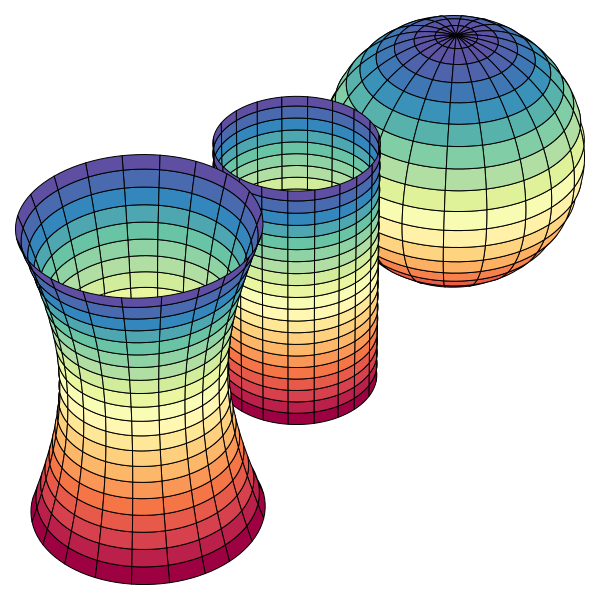
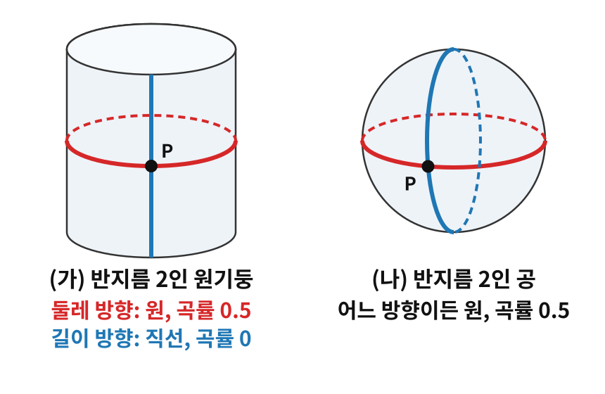
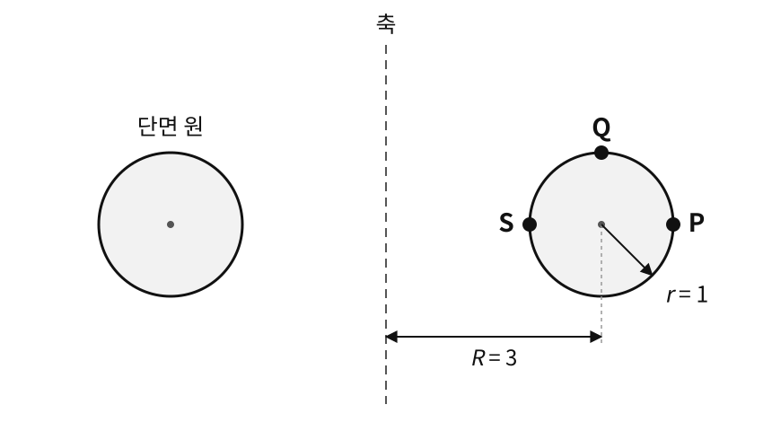

종이 한 장을 테이블에 놓자. 완벽하게 평평하다. 이제 이 종이를 돌돌 말아서 원기둥 모양으로 만들어 보자. 우리 눈에는 종이가 분명히 “휘어졌다”. 하지만 종이 위에 사는 아주 작은 개미의 관점에서 생각해 보자. 이 개미는 종이 위에서 직선을 긋고, 삼각형을 그리고, 원의 둘레와 넓이를 잴 수 있다. 놀랍게도, 개미가 측정하는 모든 기하학적 양은 종이를 말기 전과 완전히 동일하다. 삼각형의 내각의 합은 여전히 정확히 180°이고, 반지름 r인 원의 둘레는 여전히 2πr이다. 개미에게 종이는 말기 전이나 후나 “같은” 공간이다.
이제 구면 — 예를 들어 지구본 — 위에 사는 개미를 생각하자. 이 개미가 적도와 두 자오선(북극과 남극을 잇는 세로선, 곧 경도선)으로 이루어진 삼각형을 그리면, 내각의 합이 180°를 넘는다. 북극에서 두 자오선이 이루는 각도가 α라면, 이 삼각형의 내각의 합은 180°+α이다. 반지름 r인 원을 그리면 둘레가 2πr보다 짧다(마치 누군가 원을 오그라뜨린 것처럼). 이 개미는 자기가 사는 공간이 평평하지 않다는 것을 밖을 볼 필요 없이 알 수 있다.
원기둥의 개미와 구면의 개미 — 둘 다 “휘어진” 곡면 위에 살지만, 한쪽은 그것을 감지할 수 없고 다른 쪽은 감지할 수 있다. 이 차이는 무엇인가? 같은 "휘어짐"이라는 단어를 쓰고 있지만, 사실 이것은 전혀 다른 두 종류의 휘어짐이다. 이 구분을 명확히 하는 것이 이 장의 핵심이다.

세 종류의 곡면: 공 겉면(구면), 원기둥, 말안장 모양의 곡면. 원기둥은 종이를 말아서 만들 수 있지만, 구면은 종이를 찢거나 구기지 않고는 만들 수 없다.
한 가지 실마리: 종이를 원기둥으로 말 때 종이는 찢어지거나 늘어나지 않는다. 점과 점 사이의 거리가 보존된다. 하지만 종이를 구면 위에 빈틈없이 붙이려면 반드시 찢거나 구기거나 늘여야 한다. 이 차이가 결정적이다.
가우스 곡률: 두 주곡률의 곱
원기둥의 개미와 구면의 개미를 가르는 차이를 숫자 하나로 적을 수 있을까? 먼저 곡면을 밖에서 내려다보는 관찰자의 눈으로, 곡면이 한 점에서 얼마나 휘었는지부터 재 보자.
한 점에서 가장 많이, 가장 적게 휘는 방향
휘는 정도는 곡률로 잰다. 반지름 r인 원의 곡률은 1/r이라, 반지름 2인 원은 0.5, 반지름 1인 원은 1이다. 반지름 2인 원기둥 옆면의 한 점에서 곡면을 여러 방향으로 잘라 보자. 둘레 방향으로 자르면 반지름 2인 원이 나와 곡률이 0.5이고, 기둥의 길이 방향으로 자르면 직선이 나와 곡률이 0이다. 다른 방향은 그 사이다. 반지름 2인 공은 어느 방향으로 잘라도 반지름 2인 원이 나와 곡률이 0.5다.

한 점 P에서 곡면을 두 방향으로 잘라 본 단면. (가) 반지름 2인 원기둥은 둘레 방향으로 자르면 반지름 2인 원(곡률 0.5), 길이 방향으로 자르면 직선(곡률 0)이 나온다. (나) 반지름 2인 공은 어느 방향으로 잘라도 반지름 2인 원(곡률 0.5)이 나온다
이렇게 한 점에서 가장 많이 휘는 방향과 가장 적게 휘는 방향의 곡률을 주곡률(principal curvature) κ1, κ2라 부른다. 두 수를 곱하면 원기둥은 0.5×0=0, 공은 0.5×0.5=0.25다. 이 곱이 가우스 곡률이다.
가우스 곡률 (두 주곡률의 곱 / Gaussian Curvature, K=κ1κ2) — 곡면의 각 점에서의 휘어짐을 숫자 하나로 적은 것. K>0이면 구면형, K<0이면 안장형, K=0이면 평면형(원기둥 포함).
반지름이 2가 아니라 r이어도 같다. 원기둥은 κ1=1/r, κ2=0이라 밖에서 보면 분명히 휘었는데도 K=0이고, 구면은 K=1/r2>0이다. 안장면은 κ1>0, κ2<0이므로 K<0. 가우스 곡률 K의 부호가 곡면 위 기하학의 성격을 결정한다: K>0이면 삼각형 내각의 합이 180°보다 크고, K<0이면 작으며, K=0이면 정확히 180°이다.
한 점 근처의 곡면을 두 주곡률 κ1, κ2로 빚어 보는 위젯이다. 슬라이더로 두 방향의 휘어짐을 정하면 가우스 곡률 K=κ1κ2가 바로 나오고, 그 곡면을 종이 한 장을 굽혀 만들 수 있는지도 함께 나온다. 「종이 모드」를 켜고 한 방향을 굽혀 보자. 다른 방향은 어떻게 되는가? 곡면은 끌어서 돌릴 수 있다.
ML에서: 손실 곡면의 안장점
매개변수가 두 개인 모델의 손실 L(x,y)를 높이로 그리면 곡면이 하나 생긴다. 그래디언트(가장 가파른 방향의 벡터)가 0인 점(임계점)에서는 이 곡면의 두 주곡률이 헤세 행렬의 두 고윳값과 같고, 가우스 곡률은 헤세 행렬의 행렬식 LxxLyy−Lxy2이 된다. 예를 들어 L=x2−y2의 원점에서는 주곡률이 2와 −2, K=−4로 안장형이다. 여기서 곡면 위를 움직이는 것은 매개변수 (x,y), 곧 학습 중인 모델이다.
K<0인 임계점은 한 방향으로는 바닥이고 다른 방향으로는 꼭대기인 안장점이다. 도핀(Y. Dauphin) 등은 2014년 NIPS(지금의 NeurIPS) 논문 "Identifying and attacking the saddle point problem in high-dimensional non-convex optimization"에서, 고차원 신경망 학습을 가로막는 것은 나쁜 극소점보다 이런 안장점이라고 주장했다. 안장점이 경사하강법을 어떻게 붙잡는지는 아래 문제 3에서 직접 돌려 보자.
문제 1 — 탁구공과 농구공
확인 탁구공의 반지름은 2 cm, 농구공의 반지름은 약 12 cm다. 두 공의 겉면에서 가우스 곡률은 몇 배 차이 나는가?
같이 풀기 세션 1
김민준
반지름이 6배니까 곡률은 6분의 1이죠. 탁구공이 농구공보다 6배 더 휘었어요.
선생님
탁구공 겉면의 한 점에서 주곡률은 몇 개였고, 각각 얼마죠?
김민준
어느 방향으로 잘라도 반지름 2인 원이니까 두 개 모두 1/2이요. 아, 곱이니까 K=1/4이고, 농구공은 1/12×1/12=1/144예요. 6배가 아니라 36배네요.
이서연
주곡률 하나하나가 6배씩 차이 나고, 그 둘을 곱하니까 6의 제곱이야. 넓이가 가로 곱하기 세로라 길이를 두 배 늘리면 넓이는 네 배가 되는 것과 같은 모양이네. 단위도 1/cm2, 넓이의 역수야.
문제 2 — 도넛의 바깥, 꼭대기, 안쪽
계산 아래 그림처럼 반지름 r=1인 원을 가운데 축에서 R=3만큼 떨어진 곳에서 축 둘레로 한 바퀴 돌려 도넛 모양의 곡면(토러스)을 만든다. 축에서 가장 먼 바깥 점 P, 맨 위의 꼭대기 점 Q, 축에 가장 가까운 안쪽 점 S에서 두 주곡률과 가우스 곡률을 구하라. 주곡률의 부호는 곡면 바깥쪽으로 볼록하면 양수로 잡는다.

문제 2의 도넛. 축을 품은 평면으로 자른 단면으로, 반지름 1인 원 두 개가 축에서 3씩 떨어져 있다. P는 바깥 점, Q는 꼭대기 점, S는 안쪽 점
같이 풀기 세션 2
김민준
세 점 모두 단면 원 쪽으로는 반지름 1인 원이라 주곡률 1이에요. 축 둘레로 도는 방향은 P에서 반지름 3+1=4인 원, S에서 반지름 3−1=2인 원이니까 1/4과 1/2이요. 그래서 P는 K=1/4, S는 K=1/2로 안쪽이 더 휘었어요.
선생님
도넛 안쪽 S에 서서 축 둘레 방향으로 걸어 본다고 해 봐요. 발밑의 땅은 바깥쪽 P에서처럼 법선 쪽에서 멀어지며 굽나요?
이서연
P에서는 축 둘레의 원이 곡면 안쪽으로 굽으니까 바깥에서 보면 볼록해. 그런데 S에서는 그 원의 중심, 곧 축이 곡면 바깥쪽에 있어. 축 방향으로는 오목하니까 −1/2야.
김민준
그럼 S는 한 방향은 볼록하고 한 방향은 오목한 말안장이네요. K=1×(−1/2)=−1/2이요. 위젯 슬라이더에 1과 −0.5를 넣으니까 진짜 말안장 모양이 나와요.
선생님
꼭대기 Q는요?
이서연
Q에서 축 둘레로 걸으면 곡면은 옆으로 기울지 않고 평평하게 돌아요. 그 방향의 주곡률은 0이고, K=0이에요. 한 곡면 위에서 가우스 곡률이 1/4에서 0을 지나 −1/2까지 바뀌네요. 구면처럼 어디서나 같은 값인 게 오히려 특별한 경우였어요.
김민준
조교님이 제 보고서 첫 쪽만 보고 “전체가 이 수준이면 좋겠네” 하셨는데 뒤로 갈수록 엉망이었던 게 생각나요. 한 점만 보고 곡면 전체를 말하면 안 되는 거죠.
문제 3 — 멈춘 줄 알았던 학습
킬러 매개변수가 두 개인 모델의 손실이 L(x,y)=41x2+xy+41y2이다. 원점에서 그래디언트는 0이다. (가) 원점에서 손실 곡면의 두 주곡률(헤세 행렬의 두 고윳값)과 가우스 곡률을 구하고, 원점이 극소인지 안장인지 말하라. (나) 학습률 0.5로 경사하강법을 (1,1)에서 시작하면 어떻게 되는가? (1,0.999)에서 시작하면 손실은 어떻게 움직이는가?
같이 풀기 세션 3
김민준
Lxx=1/2, Lyy=1/2로 둘 다 양수예요. x로 잘라도 y로 잘라도 그릇 모양이니 원점은 극소죠.
대각 성분 둘만 보면 안 되고 헤세 행렬 (1/2111/2)의 고윳값을 봐야지. (1,1) 방향이 3/2, (1,−1) 방향이 −1/2야. 주곡률이 3/2와 −1/2이니까 K=−3/4, 안장이야. 행렬식 1/4−1로 구해도 −3/4고.
김민준
(나)는 numpy로 돌렸어요. (1,1)에서 시작하면 10걸음쯤에 원점에 닿아서 손실 0, 그래디언트 0이에요. 거기서 꼼짝도 안 해요. 학습이 끝난 거죠?
선생님
시작점을 (1,0.999)로 아주 조금만 바꿔 볼래요?
김민준
3걸음째부터 20걸음째까지 손실이 0.001 안쪽에서 거의 안 움직여요. 그러다 21걸음째부터 음수로 커지더니 36걸음째에 −1 아래로 떨어져요. 멈춘 게 아니라 안장 위에서 한참 쉬고 있었던 거예요.
이서연
한 걸음마다 (1,1) 방향 성분은 1−0.5×3/2=0.25배로 줄고, (1,−1) 방향 성분은 1+0.5×1/2=1.25배로 늘어. 처음 (1,−1) 방향 성분이 0.0007쯤이라 1.25배씩 불어나도 눈에 띄려면 한참 걸려. (1,1)에서 시작하면 그 성분이 처음부터 0이라 영영 안 늘고.
선생님
그래요. 음수인 주곡률 방향이 빠져나갈 길이고, 그 방향의 곡률이 작을수록 빠져나가는 데 오래 걸려요. 매개변수가 수백만 개인 신경망에는 이런 방향이 곳곳에 있어요. 도핀 등이 말한 안장점의 평지가 이거예요.
김민준
과제에서 loss 곡선이 한참 평평하길래 버그인 줄 알고 학습률을 바꿔 다시 돌렸는데, 그냥 뒀으면 떨어졌을지도 모르겠네요.